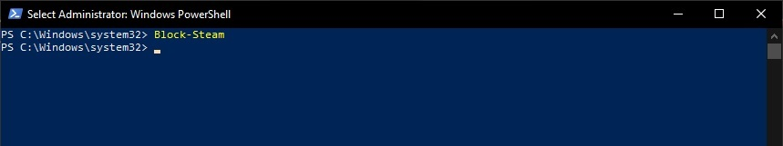
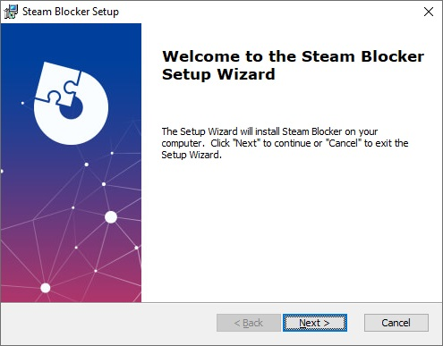
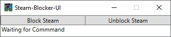
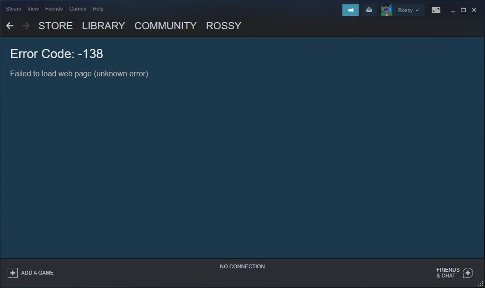

Steam Blocker Firewall Rule Script
A script that adds a firewall rule to block/unblock Steam so you can use multiple instances of family sharing at the same time.
Github can be found here: https://github.com/Rossy167/steam-blocker
Overview
So, Steam has this feature where you can allow your friend to use your games... provided that you, or somebody else isn't using them. The result is that if 3 people want all play Steins;Gate at the same time (which is the exact situation that led to me deciding to create this) that all 3 need to be online on Steam, have Steins;Gate be available (i.e nobody is playing it), then block Steam from accessing the Steam servers and then start up Steins;Gate.
This is... a weirdly convoluted process. But basically, the core is: Steam needs to be online, the game needs to be available and then Steam needs be blocked to prevent it making the game unavailable to others or updating to unavailable for you. You cannot just set yourself as offline, as this blocks the family sharing feature.
How it works
The script itself is fairly basic, it just adds a firewall rule to block Steam, and a deletes that rule on command. The rule is pretty wide sweeping, and just blocks all Steam related activities on the device doing something like this for each of Steam's various .exes:
New-NetFirewallRule -Action block -Program 'C:\Program Files (x86)\Common Files\Steam\SteamService.exe'
The scripts can be ran from a .ps1 file, but a much better method for doing it is adding the functions to your Powershell profile with the Save-BlockSteamToProfile.ps1 script and then running it adhoc as and when needed. The actual implementation of this script is so incredibly basic it's barely worth showing:
I also wanted this to be usable by my (relatively) not so tech savvy friends so I made a quick UI version using C# WPF, the window that this .exe creates is a simple form that has a Block Steam and Unblock Steam button, and it just invokes the Powershell code according to which button you press. We ran into some hiccups during installation, I used an .msi creator extension to make it a bit simpler:
After the setup, it should be pathed on your Windows device making it really easy to access. It will prompt for Admin to open (since it's modifying firewall rules) and then open to this simple Window:
The buttons will just invoke the same Powershell code as the functions I wrote for the .ps1s, which in C# looks a bit like this:
using (Process cmd = new Process()){cmd.StartInfo.FileName = "cmd.exe";some more basic object setupcmd.StandardInput.WriteLine("powershell -command " + command);
In this function, command was equal to the command I wanted to run in Powershell. For example:
New-NetFirewallRule -Action block -Program 'C:\\Program Files (x86)\\Common Files\\Steam\\SteamService.exe' etcThe reasoning for using starting cmd.exe and then piping the commands into the Powershell.exe was permissions. There's many advanced ways to invoke Powershell from C#/.NET Framework but this is the quickest and easiest (and also probably least secure) way to pipe the same permissions as the application into the Shell you need.
The resultant Steam page will look a bit like this, but at least those family sharing games will now be playable without preventing someone else from also playing them:
My use case
So funnily enough this remains one of the most used little scripts I've ever written. I constantly make use of my friend's Steam library (he has money...) so I often block Steam in order so I can play his games without preventing him from playing his games too. The UI version didn't really take off, but that's cool, because the reality is that if 2 people are playing at the same time, only one needs to use this. And it's rare for 3 people to be using it, but it happens, and they come to me, and I show them what to do.
Me personally, I have the functions in my $PROFILE so that I can just open a Powershell window and fire off the commands at will. They remain some of the most used functions in my $PROFILE. I find this far quicker than using the UI, or going to the directory where I store the .ps1 scripts.
Just fire off Block-Steam and you're good to go.